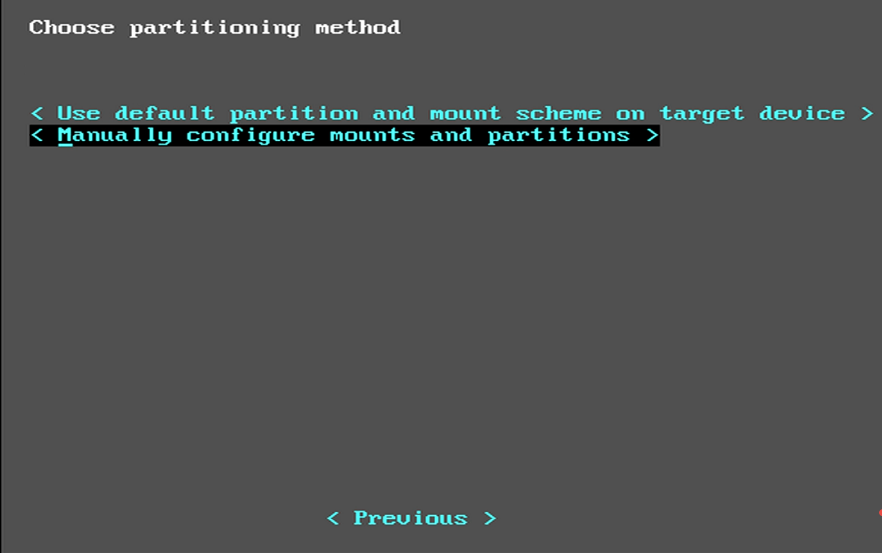
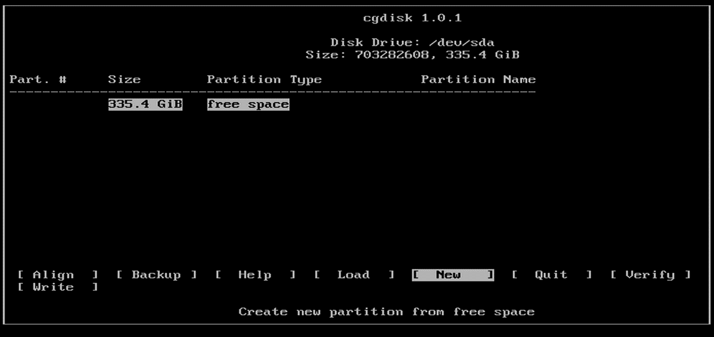
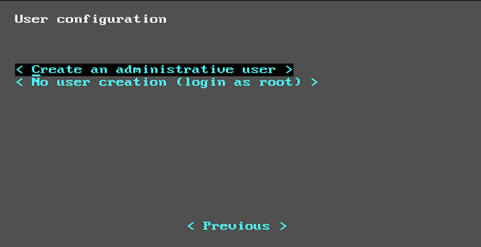
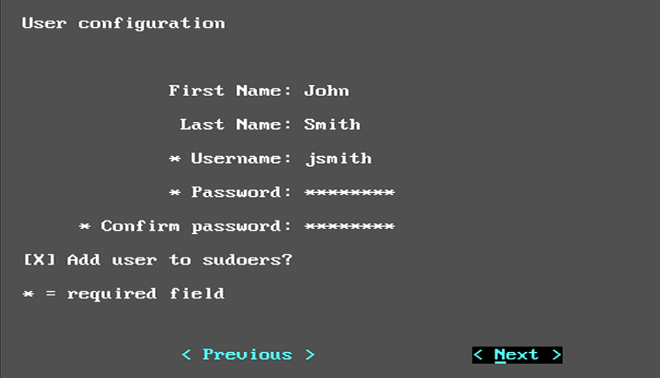
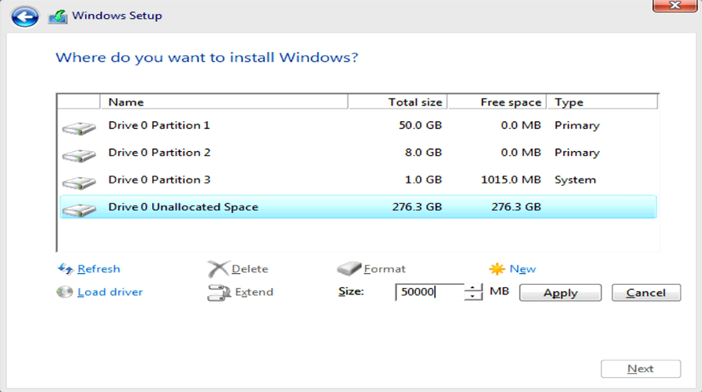
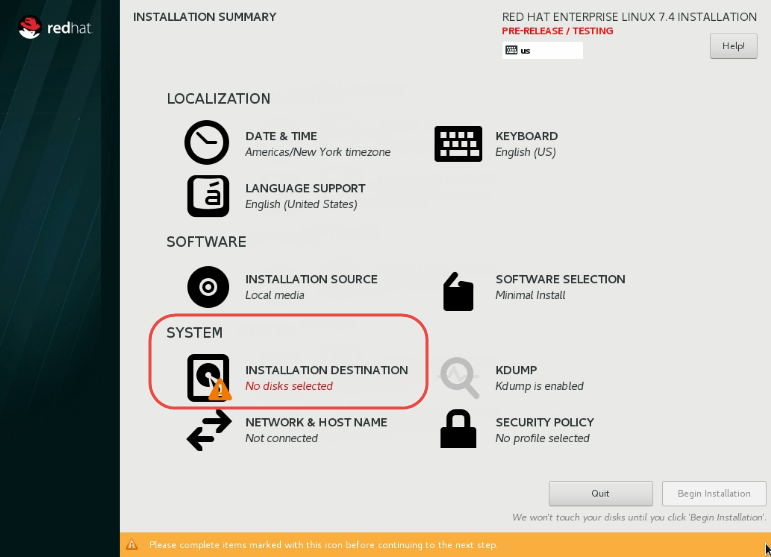
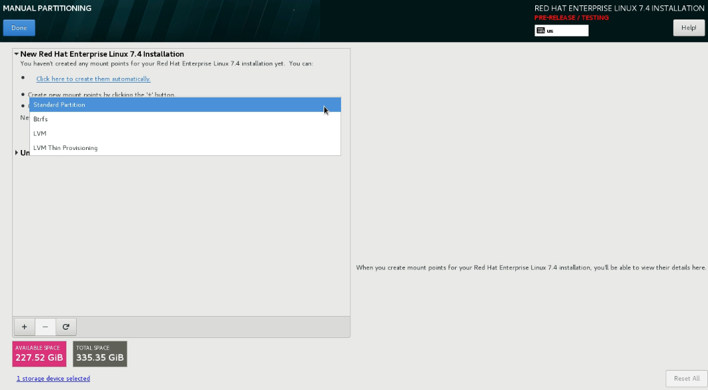
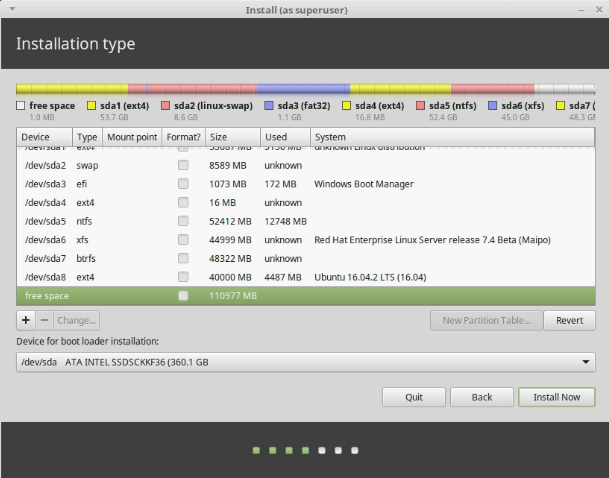
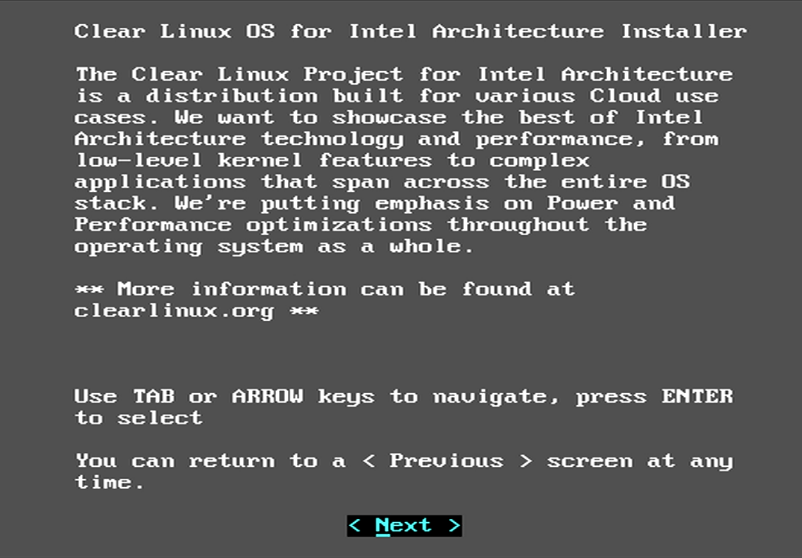

Content Map
Quick Search
Multi-boot Clear Linux with other operating systems
Starting with version 16140, Clear Linux* OS for Intel® Architecture uses the Systemd-Boot boot loader, which does not support multi-booting without manual manipulation. This document shows how to modify the boot loader for Clear Linux to work with other operating systems.
The general process to install other operating systems for a multi-booting computer is as follows:
- Install Clear Linux first with a EFI partition large enough to store the kernels of other operating systems and their initrds in the case of Linux* distributions.
- Install the next operating system without creating its own EFI partition.
- Boot into the newly installed operating system.
- For Linux distributions, copy its kernel and initrd to the Clear Linux EFI partition. This step is not needed for Windows*.
- Add an entry for the newly installed operating system in the Systemd-Boot menu.
- Make Systemd-Boot the default boot loader.
- Repeat the previous steps for each additional operating system. Always install Clear Linux first. Install other operating systems in any order.
Note
This process is not guaranteed to work with all Linux distributions and all their versions.
The following operating systems were tested on an Intel® NUC6i7KYK with 32GB RAM and a 360GB SSD. Table 1 lists the information specific to the installation of the tested operating systems.
| # | OS | Version | Partition Size [1] | Swap Size [2] | EFI Partition Size [3] | Download Link |
|---|---|---|---|---|---|---|
| 1 | Clear Linux | 16140 | 50GB | 8GB | 1GB | https://download.clearlinux.org/image/clear-15870-installer.img.xz |
| 2 | Windows | Server 2016 | 50GB | N/A | Shared with #1 | From Microsoft |
| 3 | RedHat | Server 7.4 Beta | 45GB | Shared with #1 | Shared with #1 | From RedHat |
| 4 | SUSE | Server 12 SP2 | 45GB | Shared with #1 | Shared with #1 | From SUSE |
| 5 | Ubuntu | 16.04.02 LTS Desktop | 40GB | Shared with #1 | Shared with #1 | https://www.ubuntu.com/download/desktop |
| 6 | Mint | 18.1 ?Serena? MATE | 40GB | Shared with #1 | Shared with #1 | https://linuxmint.com/edition.php?id=228 |
| [1] | Configure the partition size as desired. |
| [2] | To save disk space, a single swap partition can be shared among multiple Linux installations. Swap size was determined using these recommended swap partition sizes. |
| [3] | This partition will hold the Clear Linux and other operating systems’ kernel and boot information. The partition size is dependent on the number of operating systems that will be installed. In general, allocate about 100MB per operating system. For this demonstration, we used 1GB. |
Note
Updating any installed operating systems will likely result in the Clear Linux Systemd-Boot no longer being the default boot loader. To restore it, see Recover the Clear Linux boot loader.
Note
Updating any Linux installation may result in changes of their kernels or
initrds. Keep their corresponding Systemd-Boot
/boot/efi/loader/entries/*.conf files up-to-update.
Install the Clear Linux OS
Create a bootable USB drive of the Clear Linux installer using one of the methods below.
Start the Clear Linux installer and follow the prompts.
On the Choose Installation Type screen, choose Manual (Advanced), as shown in Figure 1.

Figure 1: Clear Linux installer: Choose installation type screen
Note
If you are not familiar with text-based installation interfaces, here are some navigation tips:
- Use the
Up ArrowandDown Arrowkeys to move between the options on the screen. - Use the
Spaceto select or highlight an option. - Press
Enterto activate the selected option and to move ahead.
- Use the
On the Choose partitioning method screen, choose Manually configure mounts and partitions, as shown in Figure 2.
Figure 2: Clear Linux: Choose partitioning method
Select the drive, in this case
/dev/sdaand pressEnterto go into the cgdisk partitioning tool. See Figure 3.
Figure 3: Clear Linux: Choose drive to partition
Create a new root partition.
Select New. See Figure 4.
Figure 4: Clear Linux: Create new partition
Accept the default first sector.
Specify the desired size of the partition. For this example, we specified 50GB. See Figure 5.

Figure 5: Clear Linux: New partition size
Set the partition type to 8300 (Linux filesystem). See Figure 6.

Figure 6: Clear Linux: Set partition type
Name the partition
CL-root. This name makes it easier to identify later. See Figure 7.
Figure 7: Clear Linux: Name partition
Create a new swap partition. See Figure 8.

Figure 8: Clear Linux: Create swap partition
- Select the free space partition located at the bottom of the column.
- Select New. See Figure 4.
- Accept the default first sector.
- Specify the desired size of the swap partition. For this example, we used 8GB. See the recommended swap partition sizes for guidance.
- Set the partition type to 8200 (Linux swap).
- Name the partition
CL-swap.
Create a new EFI partition. See Figure 9.

Figure 9: Clear Linux: Create EFI partition
- In the Partition Type column, select free space located at the bottom of the column.
- Select New. See Figure 4.
- Accept the default first sector.
- Specify the desired size of the partition. For this example, we used 1024 MB. This partition will hold Clear Linux, the kernels of the other operating systems, and their boot information. Its size depends on the number of installed operating systems. In general, allocate about 100MB per operating system. For this example, we used 1024 MB.
- Set the partition type to ef00 (EFI partition).
- Name the partition
CL-EFI.
Select Write to apply the new partition table.
Select Quit to exit the cgdisk tool.
On the Set mount points screen, specify the mount points and format settings as shown in Figure 10.

Figure 10: Clear Linux: Set mount points
On the User configuration screen, select Create an administrative user. See Figure 11.
Figure 11: Clear Linux: User configuration
Select Add user to sudoers?. See Figure 12.
Figure 12: Clear Linux: Add user as sudoer
Follow the remaining prompts to complete the installation and go through the out-of-box-experience of Clear Linux.
Log in.
Get root privileges.
$ sudo -sAdd a timeout period for Systemd-Boot to wait, otherwise it will not present the boot menu and will always boot Clear Linux.
# clr-boot-manager set-timeout 20 # clr-boot-manager update
Reboot.
Install Windows* Server 2016
Start the Windows installer and follow the prompts.
At the Type of installation screen, choose Custom: Install Windows only (advanced). See Figure 13.

Figure 13: Windows: Choose installation type
Select Unallocated Space and create a new partition of the desired size. In this example, we specified 50000 MB. See Figure 14.
Figure 14: Windows: Create new partition
Note
Windows normally creates its own EFI partition (100MB) if none exists. In this case, it sees the EFI partition created during the Clear Linux installation and won’t create its own.
Select the newly created partition and follow the remaining prompts to complete the installation of Windows. See Figure 15.

Figure 15: Windows: Install on newly created partition
Go through the Windows out-of-box-experience process.
At this point, the ability to boot Clear Linux is lost because Windows is the default boot loader. See Recover the Clear Linux boot loader to restore the Clear Linux Systemd-Boot boot loader and add Windows to its boot menu.
Install Red Hat* Enterprise Linux 7.4 Beta
Start the Red Hat installer and follow the prompts.
At the INSTALLATION SUMMARY screen, choose INSTALLATION DESTINATION. See Figure 16.
Figure 16: Red Hat: Installation summary
In the Device Selection section, select a drive on which to install the OS. See Figure 17.

Figure 17: Red Hat: Installation destination
Under the Other Storage Options section, choose I will configure partitioning. See Figure 17.
Click Done.
Under section, select from the drop down list. See Figure 18.
Figure 18: Red Hat: New partition scheme
Create a new root partition.
Click the button on the lower left corner.
Enter / and the new partition size. For this example, we specified 45 GB. See Figure 19.

Figure 19: Red Hat: Create new root partition
Click Add mount point.
Share the swap partition that was created by Clear Linux. See Figure 20.
Expand Unknown.
Select swap / sda2.
Select Reformat.
Click Update Settings.

Figure 20: Red Hat: Configure swap partition
Share the EFI partition that was created by Clear Linux. See Figure 21.
Expand Unknown.
Select EFI System Partition / sda3.
Under Mount Point, enter /boot/efi.
Click Update Settings.

Figure 21: Red Hat: Configure EFI partition
Click Done.
Follow the remaining prompts to complete the installation of Red Hat.
At this point, the ability to boot Clear Linux is lost because Grub was set as the default boot loader. Follow these steps to make the Clear Linux Systemd-Boot the default boot loader and add Red Hat as a boot option:
Boot into Red Hat.
Log in.
Get root privilege with the following command:
$ sudo -sLocate Fedora’s
grub.cfgfile at the/boot/efi/EFI/redhat/directory and look for the primary Red Hat menuentry section. The highlighted lines identify the kernel and initrd filenames, root partition UUID, and additional parameters used. This information is used to create a new Systemd-Boot entry for Red Hat. See Figure 22.
Figure 22: Red Hat: grub.cfg
Copy the kernel and initrd to the EFI partition.
# cp /boot/vmlinuz-3.10.0-663.el7.x86_64 /boot/efi # cp /boot/initramfs-3.10.0-663.el7.x86_64.img /boot/efi
Create a boot entry for Red Hat. The file must, at a minimum, contain these settings:
Setting Description title Text to show in the boot menu linux Linux kernel image initrd initramfs image options Options to pass to the EFI program or kernel boot parameters See the systemd boot loader documentation for additional details.
The options parameters must specify the root partition UUID and any additional parameters that Red Hat requires.
Note
The root partition UUID used below is unique to this example.
# cd /boot/efi/loader/entries # vi redhat.conf
Add the following lines to
redhat.conftitle Red Hat Enterprise Linux 7.4 Beta linux /vmlinuz-3.10.0-663.el7.x86\_64 initrd /initramfs-3.10.0-663.el7.x86\_64.img options root=UUID=30655c74-6cc1-4c55-8fcc-ac8bddcea4db ro crashkernel=auto rhgb LANG=en\_US.UTF-8
Re-install Systemd-Boot to make it the default boot loader.
Note
This version of Red Hat does not support bootctl install. Perform the steps in Recover the Clear Linux boot loader instead.
Reboot.
Install SUSE* Linux Enterprise 12 SP2
Start the SUSE installer and follow the prompts.
At the Suggested Partitioning screen, choose Expert Partitioner. See Figure 23.

Figure 23: SUSE: Suggested partitioning
Optional: Under Available Storage on Linux section, right-click the SUSE
/homepartition and delete it. In this example, it is/dev/sda8. See Figure 24.
Figure 24: SUSE: Delete /home partition
Under Available Storage on Linux section, right-click the SUSE root partition and resize it. In this example,
/dev/sda7is resized to 45 GB. See Figure 25.
Figure 25: SUSE: Resize root partition
Click Accept.
Follow the remaining prompts to complete the installation of SUSE.
At this point, Clear Linux cannot boot because Grub is the default boot loader. Follow these steps to make the Clear Linux Systemd-Boot the default boot loader and add SUSE as a boot option:
Boot into SUSE.
Log in.
Get root privileges with the following command:
$ sudo -sLocate SUSE’s
grub.cfgin the/boot/grub2/directory and look for the primary SUSE menuentry section. The highlighted lines identify the kernel, theinitrdfilenames, the root partition UUID, and the additional parameters used. Use this information to create a new Systemd-Boot entry. See Figure 26.
Figure 26: SUSE: grub.cfg
Copy the kernel and the
initrdfile to the EFI partition.# cp /boot/vmlinuz-4.4.21-69-default /boot/efi # cp /boot/initrd-4.4.21-69-default /boot/efi
Create a boot entry for SUSE. The file must at least contain these settings:
Setting Description title Text to show in the boot menu linux Linux kernel image initrd initramfs image options Options to pass to the EFI program or kernel boot parameters See the systemd boot loader documentation for additional details.
The options parameter must specify the root partition UUID and any additional parameters SUSE requires.
Note
The root partition UUID used below is unique to this example.
# cd /boot/efi/loader/entries # vi suse.conf
Add the following lines to the
suse.conffile:title SUSE Linux Enterprise 12 SP2 linux /vmlinuz-4.4.21-69-default initrd /initrd-4.4.21-69-default options root=UUID=b9e25e98-a644-4ac3-b955-ae32800ee350 ro resume=/dev/disk/by-uuid/6a50c032-1c1e-4b4a-b799-ca365bb10dc7 splash=silent showopts crashkernel=109M,high crashkernel=72M,low
Re-install Systemd-Boot to make it the default boot loader.
# bootctl install --path /boot/efiNote
If an older version of SUSE does not have the bootctl command, skip this step and see Recover the Clear Linux boot loader to restore the Clear Linux Systemd-Boot boot loader.
Reboot.
Install Ubuntu* 16.04 LTS Desktop
Start the Ubuntu installer and follow the prompts.
At the Installation type screen, choose Something else. See Figure 27.

Figure 27: Ubuntu: Installation type
Create a new root partition.
Under the Device column, select free space. See Figure 28.

Figure 28: Ubuntu: Add partition
Click the + button on the lower left corner.
Enter the new partition size. For this example, we used 40000 MB, as shown in Figure 29.

Figure 29: Ubuntu: Configure new root partition
Set Use as to Ext4 journaling file system.
Set the Mount point to /.
Click OK.
Under the Format? column, select the new partition to be formatted, in this example
/dev/sda8.
Share the same swap partition created by Clear Linux.
Under the Device column, select
/dev/sda2.Click Change.
Confirm Use as is set to Swap area. See Figure 30.

Figure 30: Ubuntu - Set swap partition
Follow the remaining prompts to complete the installation of Ubuntu.
At this point, the ability to boot Clear Linux is lost because Grub is the default boot loader. Follow these steps to make the Clear Linux Systemd-Boot the default boot loader and add Ubuntu as a boot option.
Boot into Ubuntu.
Log in.
Get root permissions.
$ sudo -sLocate the Ubuntu
grub.cfgfile in the/boot/grub/directory and look for the menuentry section. The highlighted lines identify the kernel, theinitrdfiles, the root partition UUID, and the additional parameters used. Use this information to create a new Systemd-Boot entry for Ubuntu. See Figure 31.
Figure 31: Ubuntu: grub.cfg
Copy the kernel and
initrdto the EFI partition.# cp /boot/vmlinuz-4.8.0-36-generic.efi.signed /boot/efi # cp /boot/initrd.img-4.8.0-36-generic /boot/efi
Create a boot entry for Ubuntu. The file must contain at least these settings:
Setting Description title Text to show in the boot menu linux Linux kernel image initrd initramfs image options Options to pass to the EFI program or kernel boot parameters See the systemd boot loader documentation for additional details.
The options parameters must specify the root partition UUID and any additional parameters that Ubuntu requires.
Note
The root partition UUID used below is unique to this example.
# cd /boot/efi/loader/entries # vi ubuntu.conf
Add the following lines to the
ubuntu.conffile:title Ubuntu 16.04 LTS Desktop linux /vmlinuz-4.8.0-36-generic.efi.signed initrd /initrd.img-4.8.0-36-generic options root=UUID=17f0aa66-3467-4f99-b92c-8b2cea1045aa ro
Re-install Systemd-Boot to make it the default boot loader.
# bootctl install --path /boot/efiNote
If an older version of Ubuntu does not have the bootctl command, skip this step and see Recover the Clear Linux boot loader to restore the Clear Linux Systemd-Boot boot loader.
Reboot.
Install Mint* 18.1 “Serena” MATE
Start the Mint installer and follow the prompts.
At the Installation type screen, choose Something else. See Figure 32.

Figure 32: Mint: Installation type
Create a new root partition.
Under the Device column, select free space. See Figure 33.
Figure 33: Mint: Add partition
Click the + button.
In the Size field, enter a value for the new partition size. For this example, we used 40000 MB, as shown in Figure 34.

Figure 34: Mint: Configure new partition settings
Set Use as to Ext4 journaling file system.
Set the Mount point to /.
Click OK.
Share the same swap partition created by Clear Linux with the following steps.
Under Device column, select
/dev/sda2.Click Change.
Confirm Use as is set to Swap area. See Figure 35.

Figure 35: Mint: Set swap partition
Follow the remaining prompts to complete the installation of Mint.
At this point, the ability to boot Clear Linux is lost because Grub is the default boot loader. Follow these steps to make the Clear Linux Systemd-Boot the default boot loader and add Mint as a boot option.
Boot into Mint.
Log in.
Get root permissions.
$ sudo -sLocate the Mint
grub.cfgfile in the/boot/grub/and look for the menuentry section. The highlighted lines identify the kernel, theinitrdfiles, the root partition UUID, and the additional parameters used. Use this information to create a new Systemd-Boot entry for Mint. See Figure 36.
Figure 36: Mint: grub.cfg
Copy the kernel and
initrdto the EFI partition.# cp /boot/vmlinuz-4.4.0-53-generic /boot/efi # cp /boot/initrd.img-4.4.0-53-generic /boot/efi
Create a boot entry for Mint. The file must contain at least these settings:
Setting Description title Text to show in the boot menu linux Linux kernel image initrd initramfs image options Options to pass to the EFI program or kernel boot parameters See the systemd boot loader documentation for additional details.
The options parameters must specify the root partition UUID and any additional parameters that Mint requires.
Note
The root partition UUID used below is unique to this example.
# cd /boot/efi/loader/entries # vi mint.conf
Add the following lines to the
mint.conffile:title Mint 18.1 Serena MATE linux /vmlinuz-4.4.0-53-generic initrd /initrd.img-4.4.0-53-generic options root=UUID=af4901e1-6238-470a-8c14-bc0f0f7715ec ro
Re-install Systemd-Boot to make it the default boot loader.
# bootctl install --path /boot/efiNote
If an older version of Mint does not have the bootctl command, skip this step and see Recover the Clear Linux boot loader to restore the Clear Linux Systemd-Boot boot loader.
Reboot.
Recover the Clear Linux boot loader
The installation of a new operating system or an upgrade of an existing operating system can result in making the Clear Linux Systemd-Boot no longer the default boot loader. To restore it, follow the steps below.
Boot the Clear Linux installer from a USB thumb drive. See Create a bootable Clear Linux USB drive.
At the introduction screen, press
Control+Alt+F2to bring up the Clear Linux console. See Figure 37.Figure 37: Clear Linux: Console
Log in as root.
Note
Logging in for the first time as root through the console requires setting a new password.
Find the location of the Clear Linux EFI partition, in this example it is
/dev/sda3. See Figure 38.# fdisk –l
Figure 38: Clear Linux - fdisk -l
Mount the EFI partition.
# mount /dev/sda3 /mntRe-install Systemd-Boot to make it the default boot loader.
# bootctl install --path /mntUnmount the EFI partition.
# umount /mntReboot.